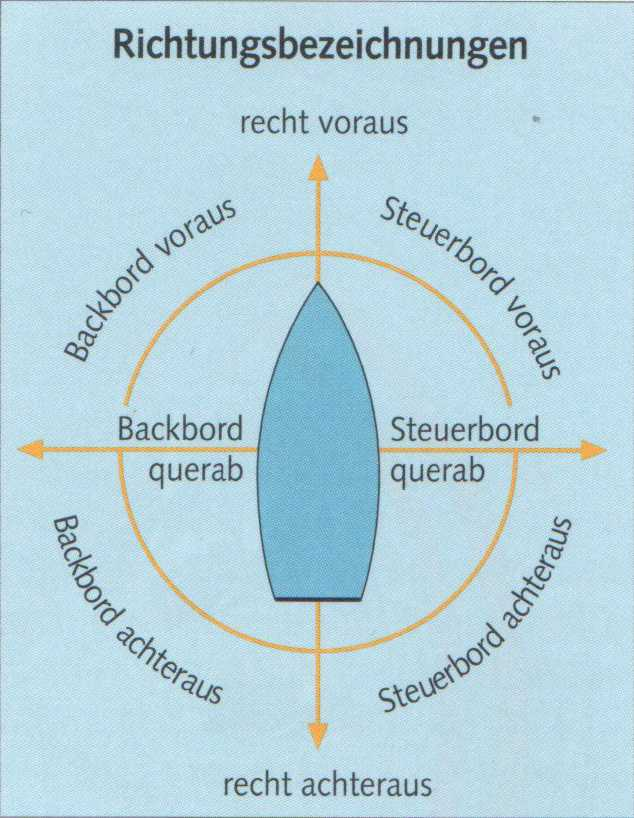
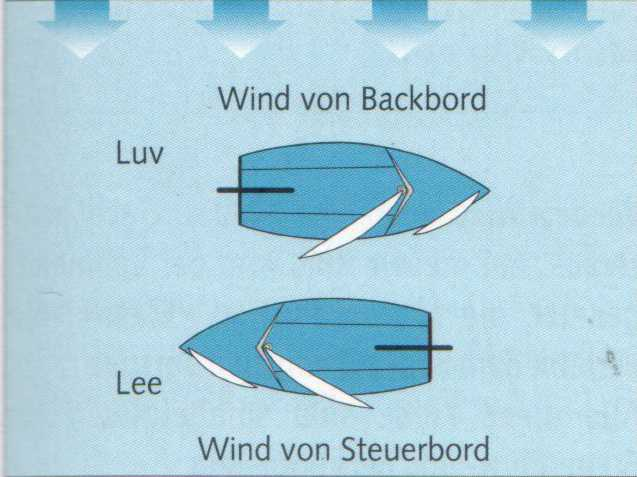
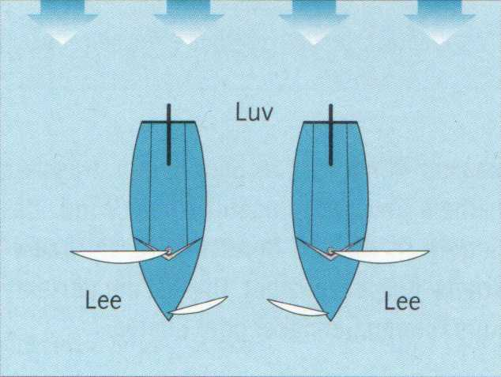
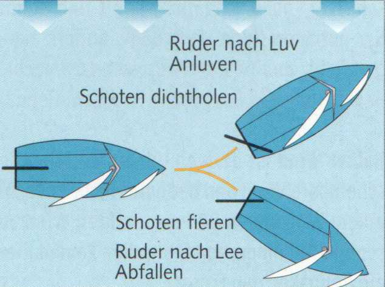

Steuerbord (Stb.) ist die rechte Seite eines Schiffes in Fahrtrichtung gesehen;
Backbord (Bb.) die linke Seite.
Querab und dwars bedeutet im Winkel von 90° zur Mittschiffslinie. Achteraus ist alles, was dahinter liegt.

Recht - nicht zu verwechseln mit rechts - heißt genau oder richtig. Entsprechend ist recht voraus oder recht achteraus etwas, das sich genau in Kiellinie voraus oder achteraus befindet.
Wind von Backbord bedeutet, dass die Segel an Steuerbord gefahren werden (früher nannte man das Steuerbord-Bug). Wind von Steuerbord besagt, dass Baum und Segel an Backbord geführt werden (früher Backbord-Bug).

Luv ist die dem Wind zugekehrte Seite eines Schiffes oder auch einer Küste.
Lee ist die dem Wind abgewandte Seite, auf der normalerweise die Segel stehen.

Kommt der Wind genau von achtern, kann das Großsegel beliebig an Steuerbord oder Backbord gefahren werden. Entsprechend wechseln auch die Lee- und Luvseite. Lee bleibt aber stets die Seite, auf der der Großbaum geführt wird. Die Seite, von der der Wind kommt, ist bei den Ausweichregeln sehr entscheidend.
Anluven heißt mit dem Bug näher an den Wind gehen.
Abfallen bedeutet mit dem Bug vom Wind abdrehen.

Kurs ist die Richtung, in die ein Boot fährt. Anluven und abfallen sind Kursänderungen. Sie erfordern auch eine Änderung der Segelstellung. Beim Anluven müssen die Schoten dichter geholt, beim Abfallen müssen sie gefiert werden.
| Merke |
| Ran an den Wind - Segel ran. Weg vom Wind - Segel weg. |
Das Ruder ist das Steuer eines Bootes. Seine Wirkung beruht auf dem Staudruck, der vor dem Ruderblatt entsteht, wenn es gegen die Strömung angestellt wird. Wird beispielsweise das Ruderblatt nach Steuerbord eingeschlagen, drückt er das Heck zur gegenüberliegenden Seite. Der Bug dreht nach Steuerbord.
► Ein Boot dreht stets nach der Seite, auf der das Ruderblatt liegt.
Nach der Stellung des Ruderblattes wird auch die Ruderlage bezeichnet:
Steuerbord-Ruder dreht das Boot nach Steuerbord.
Backbord-Ruder dreht das Boot nach Backbord.
Entsprechend lässt das Luv-Ruder das Boot anluven und Lee-Ruder (nach Lee) abfallen.
► Die Richtung, in die die Ruderpinne weist, hat nichts mit der Bezeichnung der Ruderlage zu tun.
Die Pinne zeigt stets in die entgegengesetzte Richtung. Bei Steuerbord-Ruder also nach Backbord oder bei Luv-Ruder nach Lee.